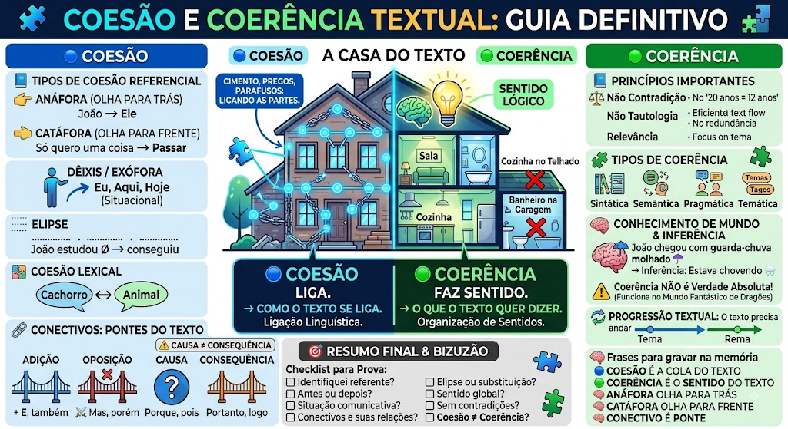

Material de estudo: Coesão e Coerência Textual
Material complementar · Ver fonte no GitHub
🧠 Introdução — Coesão x Coerência
O que é Coesão?
- Coesão é a forma como as partes do texto se ligam umas às outras.
- É a cola linguística que conecta palavras, frases e parágrafos.
- Imagine uma casa: pregos, parafusos e cimento fazem o papel da coesão.
O que é Coerência?
- Coerência é a organização lógica dos sentidos do texto.
- É o que permite compreender a mensagem globalmente.
- Imagine uma casa: a planta baixa representa a coerência, pois organiza o conjunto.
🆚 Coesão x Coerência
| Aspecto | Coesão | Coerência |
|---|---|---|
| Ideia central | Liga as partes do texto | Organiza o sentido global |
| Foco | Relações linguísticas | Relações de sentido |
| Pergunta-chave | Como o texto se liga? | O texto faz sentido? |
| Macete | 🔵 COLA | 🟢 SENTIDO |
🎯 Frase para decorar
- COESÃO → LIGA
- COERÊNCIA → FAZ SENTIDO
Exemplo de coesão referencial
- João comprou um carro.
- Ele pagou à vista.
- Ele retoma o termo 'João'.
- Resultado: ✅ coesão referencial.
Exemplo de problema de coerência
- João comprou um carro.
- O veículo é uma fruta tropical.
- As palavras estão linguisticamente conectadas.
- O sentido global é inadequado.
- Resultado: ❌ problema de coerência.
🔗 Conectivos — As Pontes do Texto
O que são Conectivos?
- Conectivos são elementos que estabelecem relações entre ideias.
- Funcionam como uma ponte entre partes do texto.
Exemplo de Conectivo
- Estudei muito.
- Portanto, passei.
- Portanto estabelece uma relação de conclusão.
➕ Adição
- Conectivos: e, também, além disso, ainda, ademais, bem como.
- Exemplo: Estudei Português e Matemática.
⚔️ Oposição / Contraste
- Conectivos: mas, porém, contudo, todavia, entretanto, no entanto.
- Exemplo: Estudei bastante, mas não fui aprovado.
- Macete: ideias em contraste → oposição.
🎯 Causa
- Conectivos: porque, pois, já que, visto que, uma vez que, como.
- Exemplo: Fiquei em casa porque estava doente.
- Porque introduz o motivo.
💥 Consequência
- Conectivos: portanto, assim, por isso, desse modo, consequentemente, logo.
- Exemplo: Choveu muito; por isso, o jogo foi cancelado.
- A consequência é o resultado apresentado.
🧠 Causa ≠ Consequência
- Choveu porque havia uma frente fria.
- Havia uma frente fria → causa.
- Havia uma frente fria; por isso, choveu.
- Choveu → consequência.
🔢 Conclusão
- Conectivos: portanto, logo, enfim, em suma, por fim, desse modo.
- Exemplo: Estudei e resolvi questões. Portanto, estou mais preparado.
🎯 Finalidade
- Conectivos: para que, a fim de que, com o intuito de.
- Exemplo: Estudei para que pudesse passar.
🔍 Explicação
- Conectivos: porque, pois, isto é, ou seja, por exemplo, em outras palavras.
- Exemplo: Ele foi aprovado, isto é, alcançou a nota necessária.
⚖️ Comparação
- Conectivos: como, assim como, tal qual, que nem.
- Exemplo: Ele estudou como um louco.
🔐 Condição
- Conectivos: se, caso, desde que, contanto que.
- Exemplo: Se estudar, passará.
🕒 Tempo / Sequência
- Conectivos: depois, antes, então, posteriormente, anteriormente, enquanto, quando, em seguida, primeiramente, por fim.
- Exemplo: Primeiramente, estudou a teoria. Em seguida, resolveu questões.
📋 Tabela dos principais conectivos
| Relação | Conectivos principais |
|---|---|
| Adição | e, também, além disso, ademais, bem como |
| Oposição | mas, porém, contudo, todavia, entretanto, no entanto |
| Causa | porque, pois, já que, visto que, uma vez que, como |
| Consequência | portanto, assim, por isso, desse modo, consequentemente, logo |
| Conclusão | portanto, logo, enfim, em suma, por fim |
| Finalidade | para que, a fim de que, com o intuito de |
| Explicação | porque, pois, isto é, ou seja, por exemplo |
| Comparação | como, assim como, tal qual, que nem |
| Condição | se, caso, desde que, contanto que |
| Tempo | depois, antes, então, quando, enquanto, em seguida, primeiramente |
🚨 A palavra ou a relação?
- O mais importante é a relação construída pelo contexto.
- Não analise um conectivo isoladamente.
- Uma mesma palavra pode assumir valores diferentes conforme a construção.
- Pergunta-chave: 'O que essa expressão está fazendo nesta frase?'
🎯 Revisão Final — Bizus e Pegadinhas
🧠 O BIZUZÃO
- 👈 ANÁFORA → ANTES
- 👉 CATÁFORA → DEPOIS
- 🌎 DÊIXIS → SITUAÇÃO COMUNICATIVA
- 🔵 COESÃO → COLA
- 🟢 COERÊNCIA → SENTIDO
- 🔗 CONECTIVO → PONTE
- ✂️ ELIPSE → OMITE, MAS O CONTEXTO RECUPERA
- 📦 HIPERÔNIMO → MAIS AMPLO
- 🎯 HIPÔNIMO → MAIS ESPECÍFICO
⚡ Pegadinha — Pronome e Anáfora
- ❌ Todo pronome produz anáfora.
- ✅ Um pronome pode participar de diferentes relações de referência.
- A análise deve considerar o contexto e o referente.
⚡ Pegadinha — Conectivos
- ❌ Todo conectivo possui sempre o mesmo valor.
- ✅ O contexto determina a relação construída.
- Não analise o conectivo isoladamente.
⚡ Pegadinha — Coesão
- ❌ Texto sem conectivos não possui coesão.
- ✅ Existem outros mecanismos de articulação textual.
⚡ Pegadinha — Coesão x Coerência
- ❌ Coesão e coerência são sinônimos.
- ✅ São conceitos diferentes, embora relacionados.
⚡ Pegadinha — Coesão garante coerência?
- ❌ Se existe coesão, o texto necessariamente é coerente.
- ✅ Pode existir coesão sem coerência global.
⚡ Pegadinha — Repetição
- ❌ Repetição de palavras sempre é erro.
- ✅ A repetição pode ser intencional e funcional.
⚡ Pegadinha — Texto fantástico
- ❌ Um texto fantástico é incoerente porque dragões não existem.
- ✅ A coerência depende do universo discursivo criado pelo texto.
🎯 Checklist para a prova
- Identifiquei o referente?
- Descobri se o referente está antes ou depois?
- Verifiquei se depende da situação comunicativa?
- Identifiquei os conectivos?
- Descobri a relação de sentido de cada conectivo?
- Verifiquei se há elipse ou substituição?
- Procurei relações lexicais?
- Li o período anterior e o posterior?
- Analisei o sentido global?
- Procurei contradições?
- Verifiquei se a alternativa confunde coesão com coerência?
🧠 Frases para gravar
- COESÃO É A COLA DO TEXTO.
- COERÊNCIA É O SENTIDO DO TEXTO.
- ANÁFORA OLHA PARA TRÁS.
- CATÁFORA OLHA PARA FRENTE.
- DÊIXIS DEPENDE DA SITUAÇÃO.
- CONECTIVO É PONTE, NÃO DECORAÇÃO.
- NÃO ANALISE A PALAVRA ISOLADAMENTE; ANALISE A RELAÇÃO QUE ELA CONSTRÓI.
- UM TEXTO PODE TER COESÃO E AINDA APRESENTAR PROBLEMA DE COERÊNCIA.
🗺️ Mapa Mental — Coesão e Coerência
